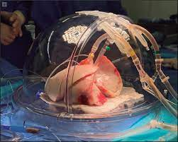

| El pulmón artificial, deve ser capas de replicar con mucha similitud las acciones de uno organico, de poder adactarse al cuaerpo de su portador, dandole la misma cantidad de aire que uno combencional, ademas este tipo de prototipos estan diseñados para evitar algun problema futuro, que algun pulmon organico podria obtener con el paso del tiempo |
 |